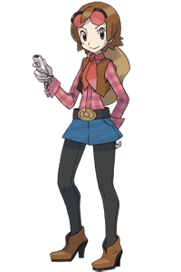

|
6
|
Intro
|
 |
|
What is My Pokémon
Ranch?
It's a place where Pokémon and Miis can interact with
each other using the Wii console. In the game, a player's Mii spends
time with Pokémon at your Ranch. You can enjoy the relaxing
Ranch life by viewing your Ranch and its Pokémon, taking
pictures, and sending those pictures to your friends.
 This is the person who created the Pokémon Ranch system for Wii. She is best friends with Bebe, creator of the "Pokémon Storage System" in Pokémon Diamond and Pokémon Pearl. In Ranch, she appears as an owner who takes care of the Ranch and its Pokémon. She loves Pokémon, and her dream is to fill the Ranch with many Pokémon someday. The Ranch will become more lively
as you get more and more Pokémon.
At the beginning of the game, Hayley will bring a Pokémon to your Ranch every day. You start with a small Ranch, but it grows bigger little by little as more Pokémon are added to your Ranch. If you have a lot of Pokémon that you caught in Pokémon Diamond or Pokémon Pearl, you can deposit many Pokémon from these games to your Ranch at once by using "DS Wireless Communications." (→p.11)
|

 |
 |
 |